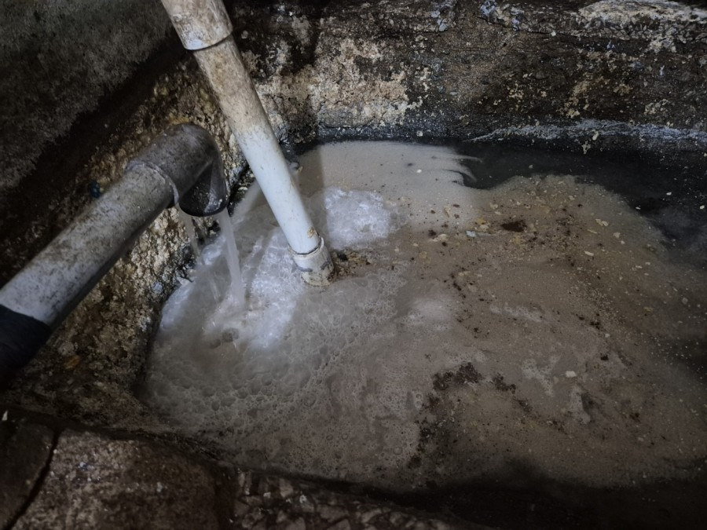
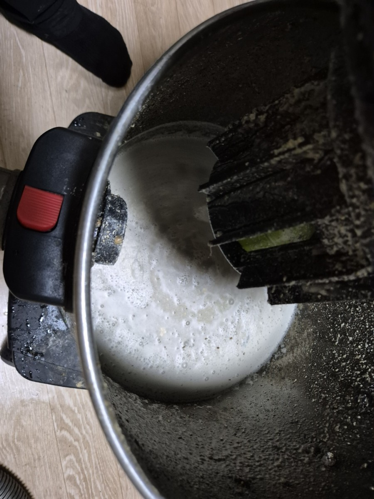
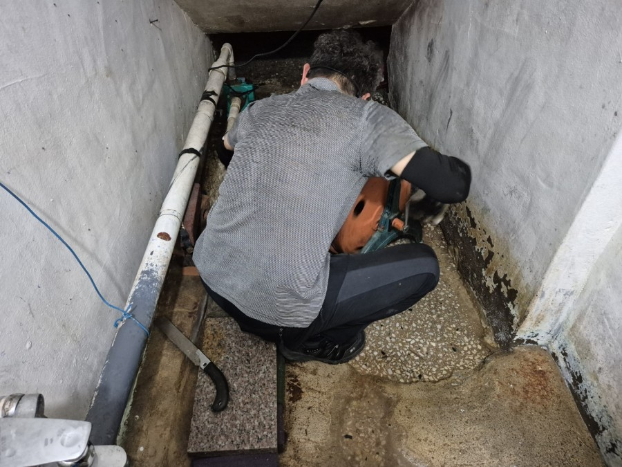
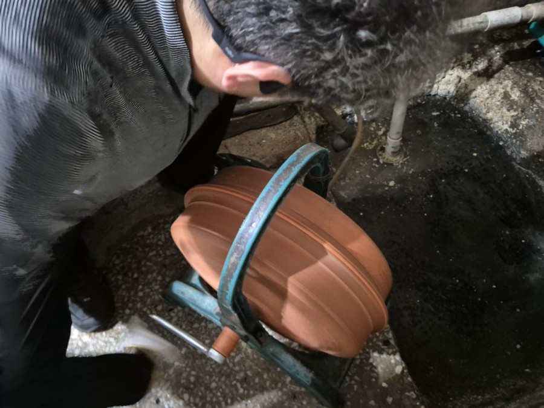
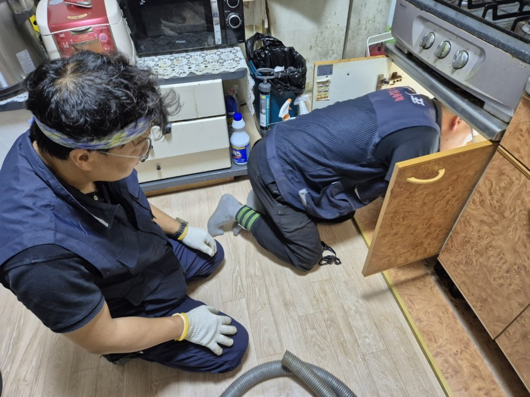
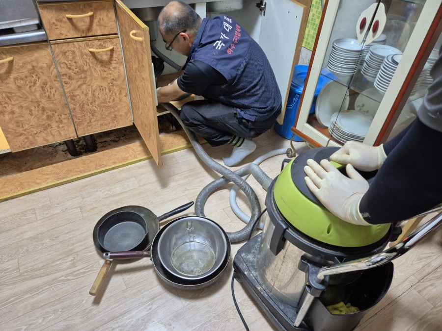
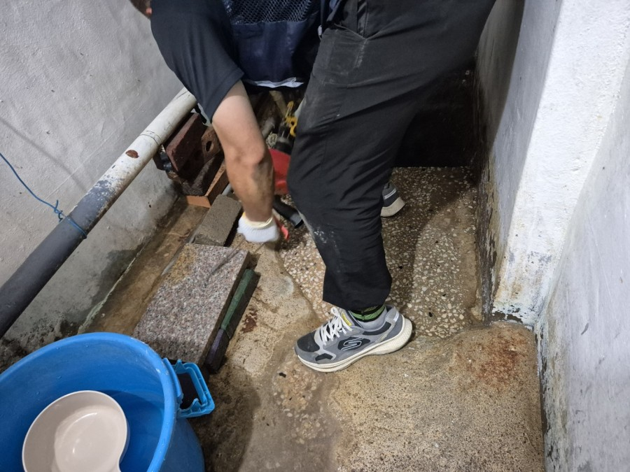
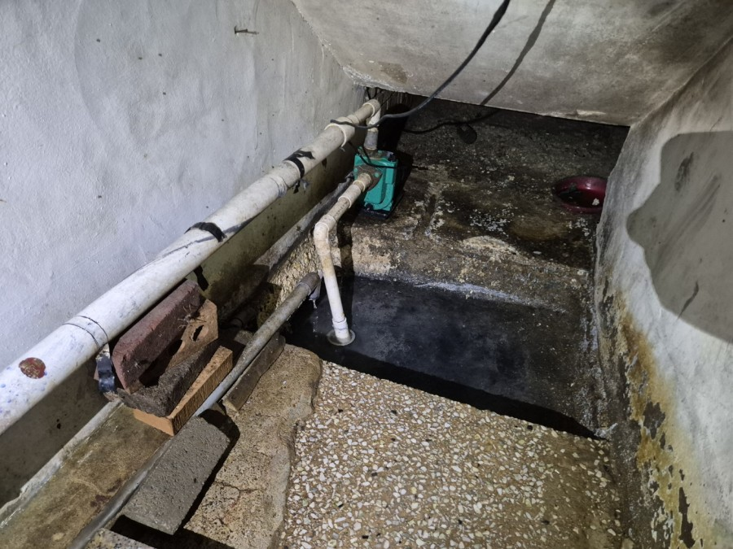
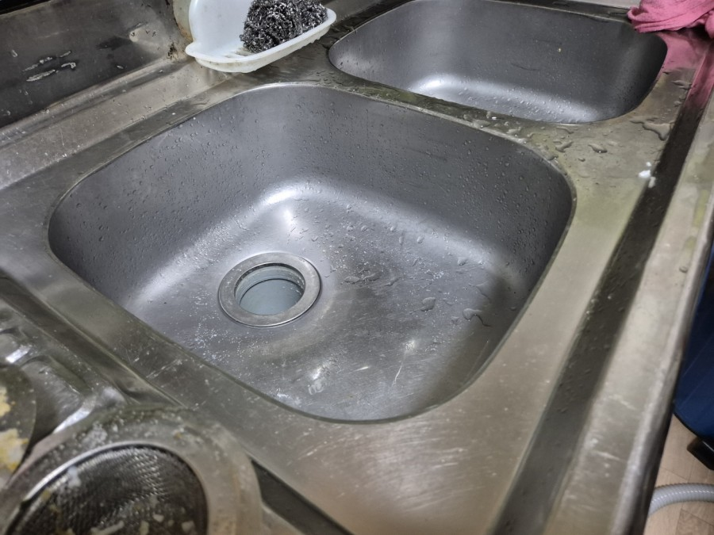

평택 지역 상가·종교시설 배관 통수 전문 고고고설비입니다. 이번 시공 현장은 평택시 비전동 소재 교회 건물 지하 식당(친교실) 주방입니다. 싱크대 배수 지연과 함께 지하 모터실(집수정) 내부로 거품 섞인 오수가 역류하는 긴급한 문제로 출동하였습니다.
지하 주방 싱크대 사용 시 물이 원활하게 빠지지 않고, 하부 모터실 내부로 유지방 슬러지 및 거품 오수가 가득 차 있는 상태였습니다. 지하 공간 특성상 배관이 복잡하게 굴곡되어 있으며, 다수가 사용하는 단체 식당 구조상 유지방 잔여물과 음식물 슬러지가 배관 내벽에 장기간 고착된 것이 주요 원인으로 진단되었습니다.
작업 공간인 지하 모터실 진입로는 협소한 구조로 세심한 작업 유도가 필요했습니다. 배관 외벽에는 하얀 석회질 결정체가 두껍게 고착되어 있었으며, 습기로 인한 벽면 변색 및 배수 펌프 주변으로 거품이 섞인 오수가 정체되어 위생 점검이 시급한 상황이었습니다.

고성능 석션 장비를 투입하여 모터실 하부와 배관 주변에 고여 있던 오수, 거품, 침전 슬러지를 강력하게 흡입 제거했습니다. 배관 내부의 물길을 1차적으로 확보한 후 다음 정밀 스케일링 단계를 준비했습니다.


1차 석션 작업 완료 후 전동 플렉스 샤프트 장비를 배관 내부 깊숙이 투입했습니다. 고속 회전하는 체인 노즐을 통해 배관 내벽에 강하게 고착된 유지방 덩어리와 석회 슬러지를 정밀 타격하여 파쇄했습니다. 협소한 지하 작업 환경에서 2인 1조 작업자가 케이블 투입 각도를 조절하며 굴곡 구간까지 구석구석 깨끗하게 스케일링했습니다.
모터실 배관 청소에 그치지 않고 위쪽 주방 싱크대 하부 배관 호스관을 개방하여 연계 점검을 진행했습니다. 오랜 기간 누적된 기름때를 분쇄 배출하고 접속부 연결 상태를 정밀 확인했습니다.


싱크대 하부 수납공간의 조리기구들을 안전하게 이설한 후 배관 내부에 남아 있던 잔여 이물질을 석션 장비로 재차 흡입하여 통수 효율을 극대화했습니다.


세척 작업이 끝난 후 지하 모터실 내부 배수 펌프의 수위 센서 작동 및 양수 상태를 최종 확인했습니다. 잔여 슬러지가 펌프 임펠러에 걸리지 않도록 주변부를 깔끔하게 정리했습니다.

주방 싱크대에 많은 양의 물을 받아 한 번에 배수하는 연속 통수 테스트를 시행했습니다. 소용돌이를 형성하며 정체 없이 시원하게 배수되었으며, 지하 모터실로의 역류 현상 역시 완벽하게 해소되었습니다. 작업 현장 및 싱크대 주변을 깨끗하게 마감 조치했습니다.
교회나 식당 등 다중이 이용하는 지하 주방은 유지방과 음식물 찌꺼기 배출량이 많아 집수정과 배수관이 쉽게 막힙니다. 평소 싱크대 거름망을 자주 비워주시고 작업 마감 시 따뜻한 물을 배관으로 충분히 흘려보내주시면 슬러지 고착 및 역류 예방에 큰 도움이 됩니다.
고고고설비는 주택, 상가, 빌딩, 공장의 생활 하수구 및 오수관 막힘, 역류 문제를 최첨단 전동 샤프트 및 고압세척 장비로 정확하게 진단하고 신속하게 해결해 드립니다.
24시간 연중무휴, 야간·주말 추가요금 없이 전문 장비로 확실하게 해결해 드립니다.
📞 010-6317-9595 전화하기